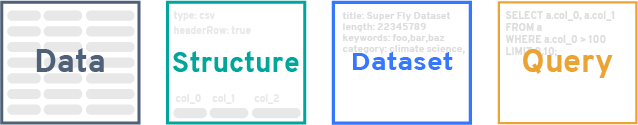

Deterministic Querying for the Distributed Web
August 2017
Abstract
The current infrastructure that underlies the distribution and processing of data over the Internet has enabled dramatic advances in a wide variety of human activities. Recent trends promoting open data promise even greater benefits as the number and variety of networked data sets grows. However, while current technologies and architectures obviously do work, they also show signs of systemic inefficiencies that impede effective large-scale discovery, distribution, preservation and reuse of data sets. An important source of inefficiencies is rooted in the database-centered pipeline that underlies much of data processing on the Internet today. The ongoing transition to a content-addressed permanent web offers an opportunity to replace certain software architecture patterns with alternatives that are more efficient and scale more effectively. We introduce one such new pattern, deterministic querying, that combines formalized query definitions, formalized data descriptions, linked metadata, hashing, and a content-addressed file system. The result supports database-free reuse of data and data processing results—and can do so on the scale of the global Internet.
1 Introduction
Open data is a boon to research and progress [Gewin 2016; Lowndes et al. 2017; Miguel et al. 2014; Murray-Rust 2008; Piwowar and Vision 2013]. Though exact numbers are unavailable for the amount of data stored around the world, it is clear it must already be stupendous. Measured in terms of web pages, the best estimate in mid-2017 puts the number of visible web pages at nearly 50 billion [Bosch et al. 2016], while in terms of data transmitted over the Internet, global IP traffic reached 1.2 zettabytes in 2016 and is predicted to reach 3.3 zettabytes per year by 2021 [Cisco 2017]. The continuing growth of data being made available on the Internet promises a windfall of benefits in many areas, enabling new discoveries, powering new innovations, lowering costs, and increasing transparency [Ferguson et al. 2014; Kansakar and Hossain 2016; Madan 2017; Martin and Begany 2017; McKiernan et al. 2016; West et al. 2014].
The open data movement has in part been inspired by and driven by the open source movement, and many of the principles espoused by open data advocates mirror those of open source efforts [Baack 2015]. At the heart of both movements is the goal to share the results of people’s work. However, open source has developed methods that are arguably more effective than comparable methods used in open data today. In particular, developers have effective methods for accumulating reusable work results in common pools so that they can be directly shared, discovered, compared, and reused. We argue that the comparable operations in open data today are cumbersome and inefficient due to the prevailing system architectures and design patterns in use.
1.1 The open-source advantage
In open source, developers are encouraged to share their work, and to seek out existing solutions to problems [Bergquist and Ljungberg 2001; Crowston et al. 2008; Sojer and Henkel 2010]. As a result, open source software builds upon other software, often by composing larger works out of smaller, reusable elements [Haefliger et al. 2008]. This is possible because software elements—objects, functions, programs, modules—can be reused as static entities incorporated into other works. The software elements represent intellectual labor: they are answers to questions. Open-source developers solve new problems in part by seeking out answers to old questions and then using those answers to build their solutions. This approach works well in software partly because developers have created precise mechanisms to describe the questions, the forms of the answers, and how to store and exchange them. The questions and answers are defined by specific input and output conventions; storage, versioning, search and sharing is accomplished by revision control systems such as git; and composition is achieved by linking source code together into larger works.
In open data, the situation is more diverse and the steps are more inefficient. The most coherent framework for data reuse is Linked Data [Auer et al. 2014; Heath and Bizer 2011]. This involves databases serving content on the Internet in RDF format [e.g., Maali et al. 2012]; search and discovery is aided by some topical catalogs [e.g., Pesce et al. 2015]. Consumers can query and reference the content in the databases, often by creating pipelines to access, translate and process the data at the user end [e.g., Klímek et al. 2016]. However, Linked Data sources remain a minority today—most data sources are shared using the far simpler approach of exposing a network API that enables users to search and access content stored in databases. The heterogeneity of the APIs and data formats in these cases complicates reuse of data and pushes complexity to individual users.
Whether using Linked Data or more conventional networked databases, it is important to note that different users often end up recreating the same solutions over and over. The pattern is that some computing system is built to consume data sets, translate the data, perform operations on the data, and then interpret the results. Sometimes the results are stored in a local (not shared) database, usually in a different format than the source format; other times, the intermediate data produced by the operations is thrown away because the processed data is either assumed to be of no value to anyone else, or else the cost of storing, managing and sharing intermediate results is assumed to be higher than simply recomputing them on demand.
The consequence is that answers to questions are often not being shared, discovered or reused by other potential users of open data.
1.2 Databases and modern software stacks
Central to the problem of treating open data as reusable components is that there is no commonly-accepted method for using the output of an open data process as the input to another open data process when the processes are not part of a common pipeline. Methods for reusing computational results in distributed workflows do exist, but they are specific to particular execution environments or frameworks [e.g., Elghandour and Aboulnaga 2012]. No common scheme exists for persisting and reusing results of computations produced by widely-used software stacks such as those within today’s web applications—the applications that power so many cloud-based services.
The architectural patterns underlying modern software stacks are part of the problem. One of the greatest barriers to efficient reuse of results is the positioning of the database. In many cases, the database is placed at the heart of a modern web-based application. Data is stored in the database in a raw form, but then must be encoded into whatever form is consumed by the user at access time. This approach of interpreting the data outward towards the user makes perfect sense when the primary “view” or representation of this data is in the form of structured HTML:
Database -> HTML Render -> Network -> Web BrowserFrom there, the natural next step is to provide programmatic access to this data via an HTTP API, which is essentially another “view” on the same central database:
Database -> API Encode -> Network -> API DecodeThis approach is flexible, and there is no question that it works—after all, it serves as the basis of many software systems. However, this approach is the product of a long history of accumulated technical contexts, some of which are now the source of a great deal of inefficiency. Consider what happens when the results of a data service are processed by another service:
Database -> API Encode -> Network -> API Decode -> Process -> DatabaseIn today’s software environments, this pattern uses multiple servers to take data out of one database, serve it across a network, decode it, process it, and put it into another database (which in fact may require additional encoding, if the output of the processing does not match how it is stored in the database—and it often does not). Further, since the amount of computing needed to process data grows with the amount of data [e.g., Muir et al. 2016] and the amount of data generated by human activity grows continually, the amount of resources expended on this inefficient arrangement continues to increase. To add insult to injury, every step requires separate engineering and long-term software maintenance. This pattern heavily favors holding the data as closed information because “opening” the data is an active effort that would require additional engineering time, CPU cycles, etc.
In other words, not only is this architecture inefficient in its use of network and computational resources: the economics of the arrangement actively discourages sharing outputs.
1.3 Reimagining distributed open data
If it were possible to short-circuit some of the steps in the architectural pattern above, it could be made more efficient, at least for certain use cases. For example, what if the decoding steps could be removed? For that matter, what if the databases could be removed too, and the network itself somehow could be the database? Then the process diagram would look like this:
Network -> Process -> NetworkThe idea that the network itself could be “queried for data” as if it where a database may seem ludicrous at first. The rest of this white paper describes how this can be achieved, using a combination of technologies and architectural patterns. Renewed attention to distributed, content-addressed networks with a robust linked-data structure provides the foundation necessary for achieving this. What follows is a plan for a suite of tools that collectively provide the necessary components to be able to query a network, with the explicit design goal of facilitating the accumulation of results through data that is held on the network.
1.4 Use cases and limitations
The intent is not to eliminate database technologies in all situations. Rather, the goal is to reduce the need for large numbers of users to recreate identical accesses and encode/decode steps on the same data. Assuming that most data continue to be held in databases, database accesses will still be needed for novel queries; the gains in reduced computation and network accesses will be realized when multiple distributed users or processes repeat the same queries. The reality today is that queries to content-addressed networks are likely to be slower than queries to local databases, but those losses are expected to be offset by deduplication of data as well as resource use reduction in the aggregate. This form of deterministic querying deliberately accepts a number of performance tradeoffs for the sake of repeatability and interoperability.
The approach described here will be best suited to certain use cases. The efficacy of this technique is inversely correlated to how frequently the underlying data changes; data that is not mutated after initial insertion is ideal for this approach. Thankfully, many data sets fall into this category, including scientific research data, government data, industrial data, and more. We contend that the development of deterministic querying offers a way to build an open data commons to provide greater opportunity for the collective, accumulative advancement of open data.
2 Data, hashes, queries and graphs
Deterministic querying is designed for content-addressed network systems. In content-based addressing, data is stored and retrieved not by its location (as is done in the current Web via HTTP), but rather by a function computed over its content—specifically, a hash function that uniquely identifies the content [Aurora 2007]. This content address can be computed independently by anyone for any content simply by running the hash function; they do not require a centralized authority to coordinate the assignment of labels or addresses. This decentralized approach is the foundation of an emerging, modern, reliable data commons that deterministic querying aims to support.
Content-based addressing, also known as compare-by-hash [Aurora 2007], was first used for networked file systems in the early 2000’s [Muthitacharoen et al. 2001; Tolia et al. 2003], and is a staple of peer-to-peer systems today. In this work, we specifically target IPFS (the InterPlanetary File System), an open-source, distributed, content-addressed, peer-to-peer, versioned file system and protocol [Benet 2014; Protocol Labs 2017]. IPFS distributes content over a network using a secure distributed hash table [Baumgart and Mies 2007; Freedman et al. 2004; Maymounkov and Mazieres 2002]. The basic premise of IPFS and other content-addressed file systems is that identical content will produce identical hash values, and thus be identified uniquely.
A fundamental goal of deterministic querying is to maximize hash discovery in content-addressed networks. The techniques below are aimed to ensure that equivalent data sets, as well as semantically-equivalent queries for data sets, each resolve to the same hash even if created by different parties in different locations at different times. This consequently leads naturally to automatic discovery of existing data sets and queries, and deduplication of content on the network.
To maximize hash discovery, the process of describing data sets and queries must be made precise and consistent. To the greatest extent possible, content and queries that are the same must produce the same hash value; thus, definitions of data resources and queries must follow carefully-defined conventions, and alternative forms must be limited. We compensate for this rigidity by storing nonessential data separately, then connecting that to data sets and queries using separate mechanisms for linking and discovery. This leads to the four building blocks of deterministic querying: Data, Dataset, Structure, and Query.

2.1 Data and Structure
In the context of deterministic querying, Data has its natural meaning: a collection of raw values of something—numerical values, qualitative values, anything—organized in some systematic way. An example file format for storing data today is the venerable comma-separated values (CSV) format, which consists of rows of numerical or text values separated by commas, with an optional first line containing column headings. Here is an example:
lat,lng,precip,datestamp,title
60.00,-50.049303,349034,2017-02-14,precip measurement one
60.00,-50.049303,430004,2017-02-15,precip measurement two
...A Data object in a content-addressed file system will be a static object identified by a hash value (henceforth, to be called simply its hash). Assume that this data file resolves to the following hash on the network:
1220cb90f19d806704600e32b152afbad9fdfc91b0216e15585f9fc1044d44c72d5bAs discussed above, this hash will be unique: any file whose computed hash matches the one above will contain the same content, no matter how or where it was created (assuming we use the same conventions for line endings, spaces and some other details), or where it’s physically located in the content-addressed file system. We focus on widely-used formats such as CSV as foundational storage formats for developing deterministic querying, but the extensions to other types of data should be clear.
Being able to interpret a given Data object requires additional information outside of the Data itself. This information is needed to provide precise details about how to interpret the content of a Data object. That is the purpose of Structure.
2.2 Structure
2.3 Query
2.4 Query execution
3 Distributed queries and linked data
4 Discussion
References
Auer, S., Bryl, V., and Tramp, S. 2014. Linked open data–Creating knowledge out of interlinked data: Results of the lOD2 project. Springer. https://doi.org/10.1007/978-3-319-09846-3.
Aurora, V. 2007. The code monkey’s guide to cryptographic hashes for content-based addressing. LinuxWorld.
Baack, S. 2015. Datafication and empowerment: How the open data movement re-articulates notions of democracy, participation, and journalism. Big Data & Society 2, 2. https://doi.org/10.1177/2053951715594634.
Baumgart, I. and Mies, S. 2007. S/Kademlia: A practicable approach towards secure key-based routing. International conference on parallel and distributed systems, 1–8.
Benet, J. 2014. IPFS – content addressed, versioned, P2P file system. Computing Resources Repository arXiv:1407.3561.
Bergquist, M. and Ljungberg, J. 2001. The power of gifts: Organizing social relationships in open source communities. Information Systems Journal 11, 4, 305–320. https://doi.org/10.1046/j.1365-2575.2001.00111.x.
Bosch, A. van den, Bogers, T., and Kunder, M. de. 2016. Estimating search engine index size variability: A 9-year longitudinal study. Scientometrics 107, 839–856. https://doi.org/10.1007/s11192-016-1863-z.
Cisco. 2017. The zettabyte era: Trends and analysis. Available on the World Wide Web at https://www.cisco.com/c/en/us/solutions/collateral/service-provider/visual-networking-index-vni/vni-hyperconnectivity-wp.html.
Crowston, K., Wei, K., Howison, J., and Wiggins, A. 2008. Free/Libre open-source software development: What we know and what we do not know. ACM Comput. Surv. 44, 2, 7:1–7:35. https://doi.org/10.1145/2089125.2089127.
Elghandour, I. and Aboulnaga, A. 2012. ReStore: Reusing results of mapReduce jobs. Proceedings of the VLDB Endowment 5, 6, 586–597. https://doi.org/10.14778/2168651.2168659.
Ferguson, A.R., Nielson, J.L., Cragin, M.H., Bandrowski, A.E., and Martone, M.E. 2014. Big data from small data: Data-sharing in the ’long tail’ of neuroscience. Nature Neuroscience 17, 11, 1442–1447. https://doi.org/10.1038/nn.3838.
Freedman, M.J., Freudenthal, E., and Mazières, D. 2004. Democratizing content publication with coral. Proceedings of the 1st conference on symposium on networked systems design and implementation, USENIX Association, 18–18.
Gewin, V. 2016. Data sharing: An open mind on open data. Nature 529, 7584, 117–119. https://doi.org/10.1038/nj7584-117a.
Haefliger, S., Krogh, G. von, and Spaeth, S. 2008. Code reuse in open source software. Management Science 54, 1, 180–193. https://doi.org/10.1287/mnsc.1070.0748.
Heath, T. and Bizer, C. 2011. Linked data: Evolving the web into a global data space. Morgan & Claypool.
Kansakar, P. and Hossain, F. 2016. A review of applications of satellite earth observation data for global societal benefit and stewardship of planet earth. Space Policy 36, 46–54. https://doi.org/10.1016/j.spacepol.2016.05.005.
Klímek, J., Helmich, J., and Nečaský, M. 2016. LinkedPipes visualization: Simple useful linked data visualization use cases. International semantic web conference, 112–117. https://doi.org/10.1007/978-3-319-47602-5_23.
Lowndes, J.S.S., Best, B.D., Scarborough, C., Afflerbach, J.C., Frazier, M.R., OHara, C.C., Jiang, N., and Halpern, B.S. 2017. Our path to better science in less time using open data science tools. Nature Ecology & Evolution 1, 6, s41559–017–0160. https://doi.org/doi:10.1038/s41559-017-0160.
Maali, F., Cyganiak, R., and Peristeras, V. 2012. A publishing pipeline for linked government data. The semantic web: Research and applications, 778–792. https://doi.org/10.1007/978-3-642-30284-8_59.
Madan, C.R. 2017. Advances in studying brain morphology: The benefits of open-access data. PeerJ Preprints. https://doi.org/10.7287/peerj.preprints.3010v2.
Martin, E.G. and Begany, G.M. 2017. Opening government health data to the public: Benefits, challenges, and lessons learned from early innovators. Journal of the American Medical Informatics Association 24, 2, 345–351. https://doi.org/10.1093/jamia/ocw076.
Maymounkov, P. and Mazieres, D. 2002. Kademlia: A peer-to-peer information system based on the XOR metric. International workshop on peer-to-peer systems, Available on the World Wide Web at https://pdos.csail.mit.edu/~petar/papers/maymounkov-kademlia-lncs.pdf, 53–65.
McKiernan, E.C., Bourne, P.E., Brown, C.T., Buck, S., Kenall, A., Lin, J., McDougall, D., Nosek, B.A., Ram, K., and Soderberg, C.K. 2016. How open science helps researchers succeed. eLife 5. https://doi.org/10.7554/eLife.16800.
Miguel, E., Camerer, C., Casey, K., Cohen, J., Esterling, K.M., Gerber, A., Glennerster, R., Green, D.P., Humphreys, M., and Imbens, G. 2014. Promoting transparency in social science research. Science 343, 6166, 30–31. https://doi.org/10.1126/science.1245317.
Muir, P., Li, S., Lou, S., Wang, D., Spakowicz, D.J., Salichos, L., Zhang, J., Weinstock, G.M., Isaacs, F., Rozowsky, J., and Gerstein, M. 2016. The real cost of sequencing: Scaling computation to keep pace with data generation. Genome Biology 17, 53. https://doi.org/10.1186/s13059-016-0917-0.
Murray-Rust, P. 2008. Open data in science. Serials Review 34, 1, 52–64. https://doi.org/10.1080/00987913.2008.10765152.
Muthitacharoen, A., Chen, B., and Mazieres, D. 2001. A low-bandwidth network file system. Proceedings of the 18th symposium on operating systems principles, Available on the World Wide Web at http://www.sosp.org/2001/papers/mazieres.pdf, 174–187.
Pesce, V., Maru, A., Archer, P., Malapela, T., and Keizer, J. 2015. Setting up a global linked data catalog of datasets for agriculture. Research conference on metadata and semantics research, 357–368. https://doi.org/10.1007/978-3-319-24129-6_31.
Piwowar, H.A. and Vision, T.J. 2013. Data reuse and the open data citation advantage. PeerJ 1, e175. https://doi.org/10.7717/peerj.175.
Protocol Labs. 2017. IPFS home page. https://ipfs.io.
Sojer, M. and Henkel, J. 2010. Code reuse in open source software development: Quantitative evidence, drivers, and impediments. Journal of the Association for Information Systems 11, 12, 868–901.
Tolia, N., Kozuch, M., Satyanarayanan, M., Karp, B., Bressoud, T., and Perrig, A. 2003. Opportunistic use of content addressable storage for distributed file systems. USENIX annual technical conference, general track, Available on the World Wide Web at https://www.usenix.org/legacy/publications/library/proceedings/usenix03/tech/full_papers/tolia/tolia_html/usenix03.html, 127–140.
West, J., Salter, A., Vanhaverbeke, W., and Chesbrough, H. 2014. Open innovation: The next decade. Research Policy 43, 5, 805–811. https://doi.org/10.1016/j.respol.2014.03.001.